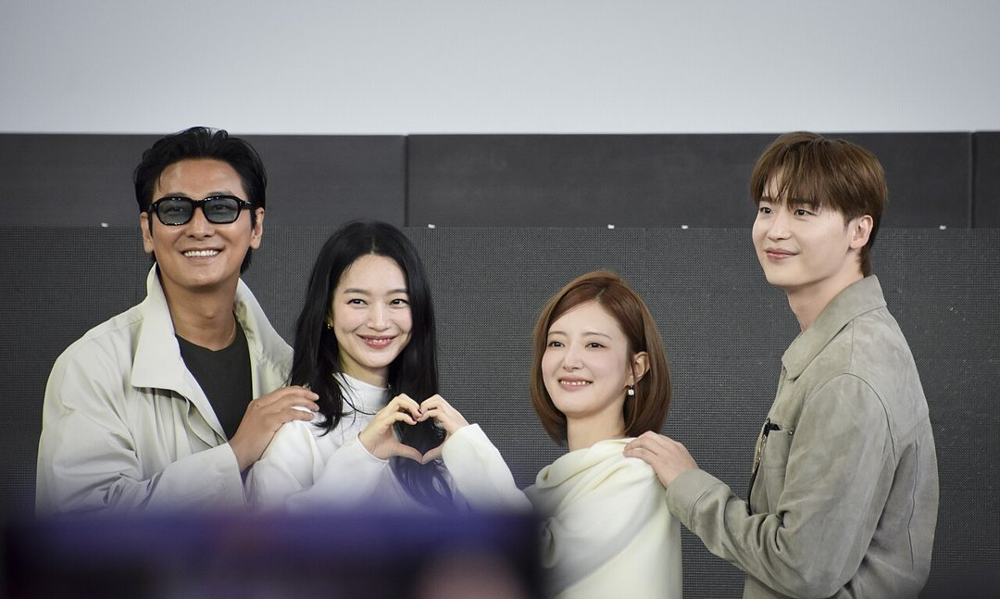
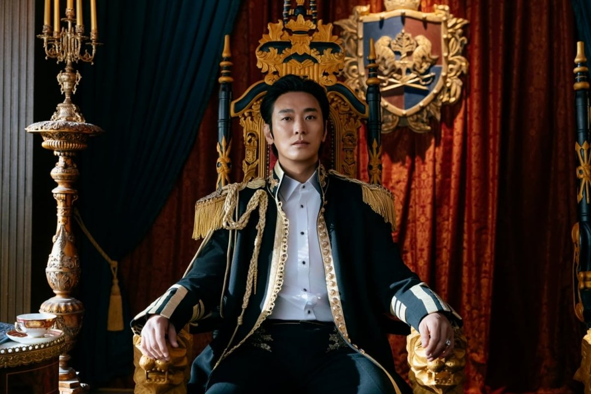
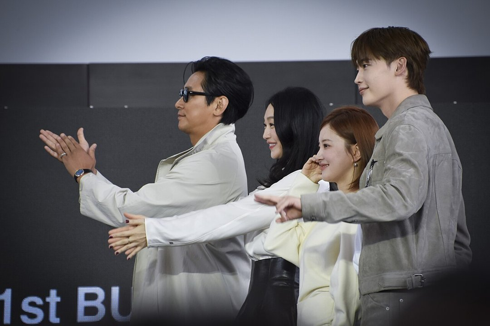
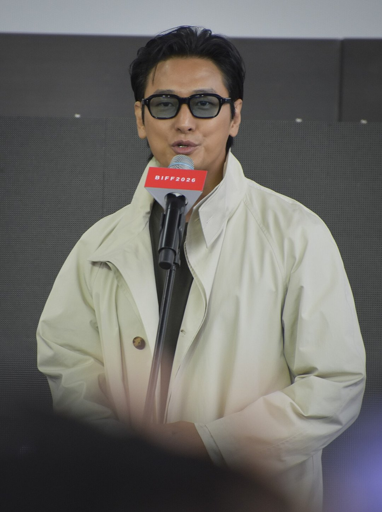

황후 역을 맡은 배우가 가장 매력적인 인물로 자신에게 이혼을 통보하는 황제를 꼽았다면요? 디즈니+ 시리즈 '재혼 황후'의 신민아 이야기예요. 11월 4일 공개를 앞두고 네 인물의 관계와 배우들이 직접 고른 캐릭터를 정리했어요.
📷 사진 1 자리
▲ 사진: Arielaortizb / CC BY-SA 4.0 / 위키미디어 공용
이혼 통보를 받은 황후, 재혼으로 맞서다
중심은 동대제국의 완벽한 황후 나비에(신민아)예요. 황제 소비에슈(주지훈)가 도망 노예 라스타(이세영)에게 마음을 빼앗기고 나비에에게 이혼을 통보하죠.
📷 사진 2 자리
▲ 디즈니+ '재혼 황후'에서 황제 소비에슈를 연기한 주지훈 · 사진=월트디즈니 컴퍼니 코리아 제공
나비에는 이혼을 받아들이는 대신 조건을 내걸어요. 옆 나라 왕자 하인리(이종석)와의 재혼을 승인해 달라는 거예요. 버려지는 쪽이 아니라 다음 결혼을 먼저 꺼내는 황후, 이 장면이 제목 '재혼 황후'의 뜻이에요.
정리하면 나비에와 소비에슈가 원래 부부, 소비에슈 옆에 라스타, 나비에 옆에 하인리가 서는 구도예요.
배우들이 꼽은 '가장 매력적인 인물'
패션지 W KOREA 유튜브 인터뷰에서 두 배우는 엇갈린 답을 냈어요. 주지훈은 이세영의 라스타를 골랐어요. 이세영이 통통 튀고 귀엽게 그려냈다면서, "내가 연기했다면 훨씬 더 요부처럼 짜증 나게 표현했을 것"이라고 덧붙였죠.
📷 사진 3 자리
▲ 사진: Arielaortizb / CC BY-SA 4.0 / 위키미디어 공용
신민아는 소비에슈를 꼽았어요. 이유가 재밌어요. 소비에슈는 대사가 너무 이상하고, 나비에와 함께 보낸 세월을 무색하게 만든다고 했거든요. 그래도 자기 생각을 거침없이 말한다는 점은 매력이라고 봤어요.
주지훈도 소비에슈가 가장 가까운 나비에에게 해서는 안 될 말을 아무렇지 않게 한다고 인정했어요. 가장 가까운 사람에게 상처 주는 말을 쉽게 하는 인물, 두 배우가 본 소비에슈는 같은 얼굴이에요.
주지훈에게는 의상도 관문이었어요. 브이넥이 배꼽까지 내려오는 황실 의상을 입고 '이게 괜찮나' 싶었다고 털어놨어요.
📷 사진 4 자리
▲ 사진: Arielaortizb / CC BY-SA 4.0 / 위키미디어 공용
세 번째 만남, 이번에도 이어지지 않는 사이
신민아와 주지훈은 드라마 '마왕', 영화 '키친'에 이어 이번이 세 번째 호흡이에요. 신민아는 "우리 세 작품 다 완전 커플이 아니다"라고 했고, 주지훈은 "망한 사랑"이라고 받았어요.
이번에도 두 사람은 이혼으로 갈라서는 부부로 만나요. 주지훈은 신민아가 가진 우아함이 황후라는 역할과 잘 맞았다고 설명했어요.
짧은 리뷰
'재혼 황후'는 이혼을 통보받은 황후가 재혼을 요구하며 판을 뒤집는 로맨스 판타지 사극이에요. 신민아, 주지훈, 이세영, 이종석이 네 꼭짓점을 맡았어요.
볼거리는 인물 구도 자체예요. 완벽한 황후와 거침없는 황제, 그 곁의 라스타와 하인리가 각자 관계를 흔드는 구조죠. 공개된 스틸 속 왕좌 장면처럼 황실 의상과 세트도 챙겨 볼 만해요.
이혼 이후를 다루는 로맨스, 당당하게 판을 바꾸는 여주인공 이야기를 좋아하는 분께 맞는 시리즈예요.
✍️ 내 경험 자리 — 직접 보고·듣고 느낀 점 3~5문장으로 바꿔 주세요 (네이버 D.I.A.는 경험이 담긴 글을 우대하고, 경험 없는 글은 검색에서 밀릴 수 있어요)
나비에의 무기는 이혼 수락이 아니라 재혼 요구이고, 배우들은 그 반대편의 소비에슈와 라스타를 가장 매력적으로 봤어요. '재혼 황후'는 11월 4일 디즈니+에서 공개돼요.



